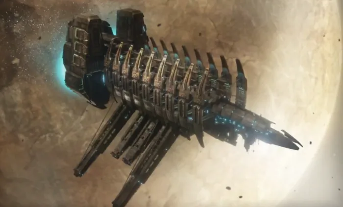
2446년, 자원부족에 시달리는 인류에게 최초의 "행성 파쇄선" USG 이시무라는 혁신의 상징으로 여겨졌다.
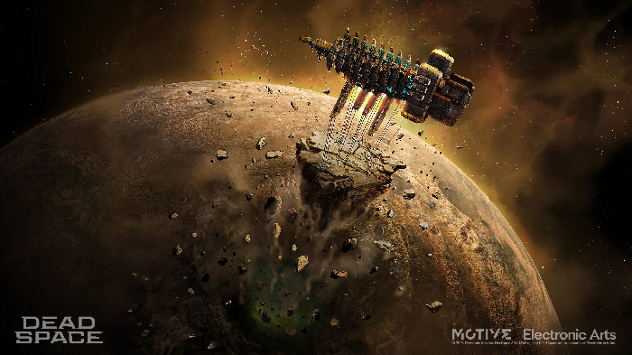
1.6km 크기에 초광속 이동을 거의 일상적인 일로 만들어 준 충격점 항법을 탑재한 최초의 대형 우주선들 가운데 하나였던 이시무라호는 소행성은 물론 작은 위성까지도 놀라운 효율로 통째로 채굴하고 가공할 수 있도록 설계되었다.
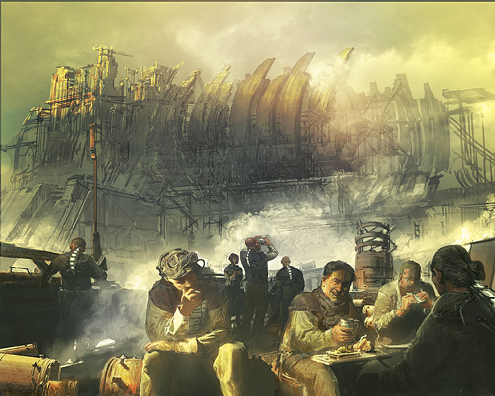
그토록 오랜 기간 운용되었음에도 이시무라호는 여전히 CEC사 함대의 자랑이었으며, 회사가 보유한 가장 거대한 행성 파쇄선이라는 지위도 굳건히 유지하고 있었다.
최초로 취역한 지 62년이 지난 후에도 이시무라호는 놀라울 정도로 양호한 상태를 유지하고 있었다. 오랜 세월에 걸쳐 장비가 꾸준히 개량되었으며, 선내의 여러 공간 역시 최신 기술의 발전을 활용할 수 있도록 개조되었다.
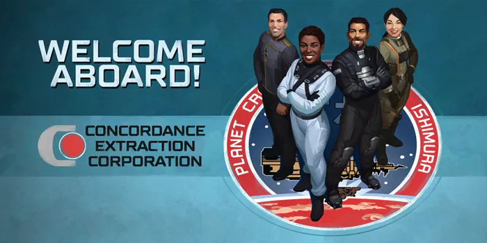
모든 사람들이 이시무라를 알고 있었다. 아이들은 이시무라의 장난감 모형을 가지고 놀며 선장을 꿈꾸었다. 이시무라 호의 선장은 대통령이나 유명 연예인만큼 유명했고, 지난 62년 동안 총 6명이 선장으로 일했다.
이시무라로 항해를 한다는 것은 집으로부터 수개월에서 수년간 떨어져 있다는 것을 뜻했지만 누구도 함부로 거부할 수 없는 영광이었다.
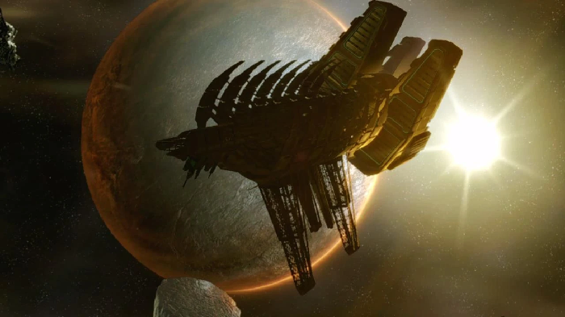
장장 60년을 넘는 세월 동안 현역으로 활동했던 이시무라 호는 2508년의 35번째 항해를 마지막으로 하고 퇴역이 예정되어 있었다
"그 사건"이 일어나기 전까지는...
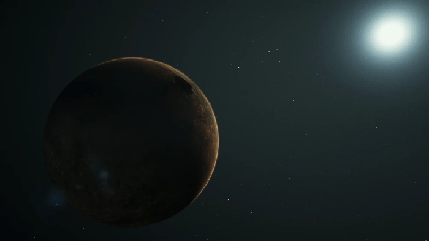
2505년, CEC사는 정부의 출입금지 지역에서 이지스 VII라는 행성계를 발견한다.
행성에 막대한 가치의 자원이 매장되어 있다는 사실을 발견한 회사는 격리 조치를 무시하고 불법으로 채굴 식민지를 건설하기로 결정한다.
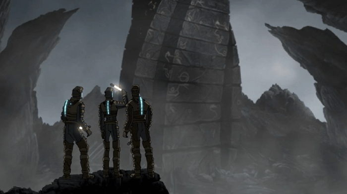
이지스 VII의 식민지에서 탐사대가 지상을 탐사하던 도중, "레드 마커"라는 외계유물로 추측되는 물체가 발견된다.
사실 이는 23세기에 생긴 신흥종교 유니톨로지에서 가장 신성시하는 유물이었고
정보를 입수한 교단은 회사 내의 영향력을 최대한으로 발휘하여 선장 벤자민 마티우스를 포함해 탑승 선원 상당수를 지위고하를 막론하고 교단 소속 인물들로 채워넣는다.
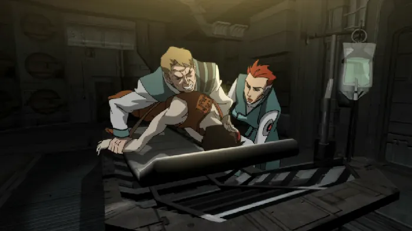
마커가 발견된 이후, 식민지에서는 급속히 확산되는 전염병으로 보이는 정신질환 현상이 나타나기 시작했다. 주민 상당수가 불면증과 우울증, 사랑하는 사람들의 환영이나 끔찍한 괴물들이 등장하는 생생한 환각에 시달리기 시작했다.
결국 여러 명이 자살하거나 다른 사람들을 죽이는 사태까지 발생했고, 이에 일부 선원들은 마커의 탓이라며 항의했지만 비밀리에 마커 회수 임무를 맡은 선장은 이를 무시한다.
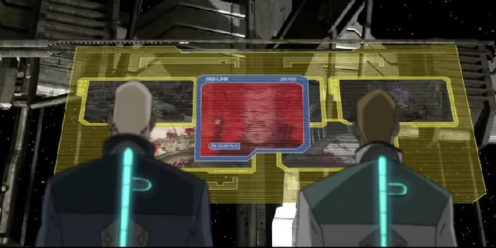
행성 파쇄 작업이 진행된 직후 식민지에 정전이 발생했고 이시무라호와의 모든 무선 통신이 두절되었는데...
이후 통신이 재개되었을 때 화면을 가득 채운 것은 울부짖는 비명과 피로 물든 참혹한 지옥도였다.
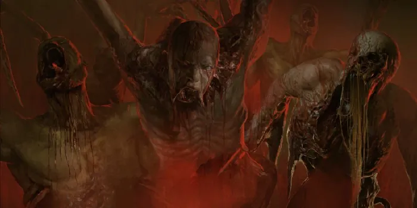
지표면 아래에서 "네크로모프" 감염 사태가 마침내 본격적으로 시작된 것이다. 죽었던 시체 더미가 마커의 영향으로 갑자기 되살아나 괴물로 변이했고, 자신들의 동료들을 무참히 학살하기 시작한 것이다.
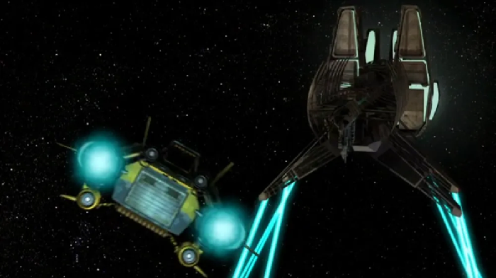
얼마 지나지 않아 식민지의 생존자들을 실은 셔틀들이 이시무라호에 도달하려 했다. USG 이시무라호는 그들에게 비행 금지 규정을 위반하지 말라는 메시지를 연이어 보냈다. 그러나 이러한 호소는 당연히 받아들여지지 않았고, 결국 선장은 결단을 내리고 셔틀들을 향해 발포하도록 명령했다.
함선에 장착된 소행성 파괴용 포대에서 쏟아져 나온 포탄들이 셔틀들을 향해 빗발쳤다. 상당수의 셔틀이 격추되거나 소행성 잔해와 부딪혀 파괴되었다. 결국 단 두 대만 살아남아 불시착했고, 나머지는 모두 파괴되었다.
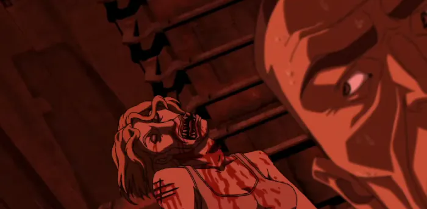
하지만 이로 끝난게 아었으니 생존한 셔틀 중 한 대는 이지스 VII의 굴착 작업 감독관이었던 콜린 배로우가 조종하고 있었는데, 그는 식민지에서 자살한 아내의 시체를 들고 왔던 것이다.
결국 아내는 칩입한 감염형 네크로모프에 의해 비행 도중 네크로모프로 변이했고 배로우를 살해했다.
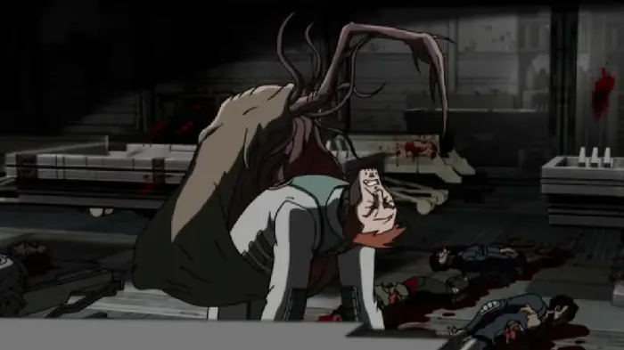
이때의 소동으로 선원들은 감염체가 들어왔다는 것을 인지하지 못하던 상황이었고 이때 감염체는 환기구를 타고 의료실의 시체 안치소로 향해 시체들을 떼로 감염시키기 시작했다.
승무원들은 평소와 다름없이 일상적인 업무를 계속했지만, 점차 문제가 발생하기 시작했다. 어째서인지 얼마전의 통신 마비처럼 설비들이 마침내 작동을 멈추고 고장을 일으켰고 하나둘 가동을 중단하면서 함선 곳곳에 오류 메시지가 쏟아졌다.
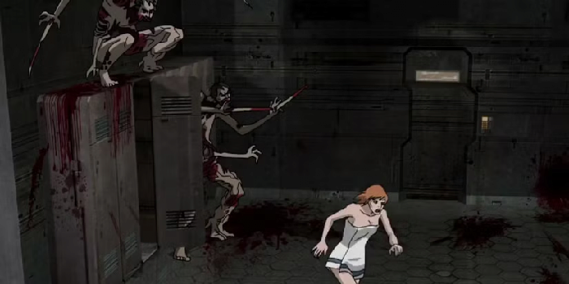
한편 기괴하게 비틀거리며 움직이는 살인자들은 함선의 환풍구를 통해 내부를 돌아다니며, 불과 몇 시간 만에 고립된 승무원들을 도살했다.
처음에는 승무원들이 갑자기 사라지는 일을 아무도 알아차리지 못했다. 그러나 시간이 흐르면서 점점 더 많은 갑판에서 호출에 응답하지 않기 시작했고, 승무원들 사이의 긴장감도 고조되었다. 마침내 승무원 구역에서 쉬고 있던 선원들이 떼거지로 몰살되면서 상황이 악화되었다.
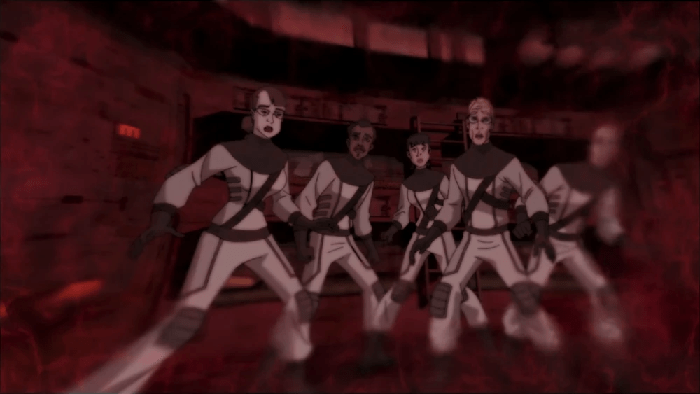
마침내 몇 시간만에 함선의 질서가 무너지고 모든 승무원은 자신들이 얼마나 심각한 위험에 처해 있는지 깨닫게 되었다.
함선 전체에 비상 경보가 울려 퍼졌고, 승무원들은 자신들이 알고 지내던 사람들의 얼굴을 한 괴물들이 문을 긁어대는 가운데, 이들의 침입을 막기 위해 함선 곳곳에 바리케이드를 설치했다.
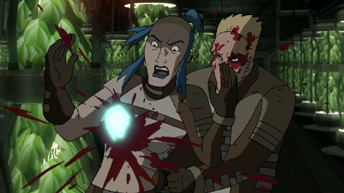
생존자들끼리 뭉쳐서 정보를 교환하고 체계적으로 대책을 세워 화력 차이를 극대화하면 어떻게든 대항할 수 있었을 테지만 여러 생존자들은 정신이상증세까지 보여 자해하거나 다른 이들을 공격하기까지 하였다.
안타깝게도 체계적인 대응 계획은 전혀 없는 것처럼 보였다. 결국 갑판 전체가 각자 알아서 생존을 도모해야 하는 상황에 내몰렸다. 일부 구역은 다른 곳보다 오래 버텼지만, 언제나 틈새나 환풍구, 취약한 지점, 혹은 정신적으로 나약해진 누군가가 존재했고, 네크로모프들은 그러한 약점을 이용해 내부로 침투했다.
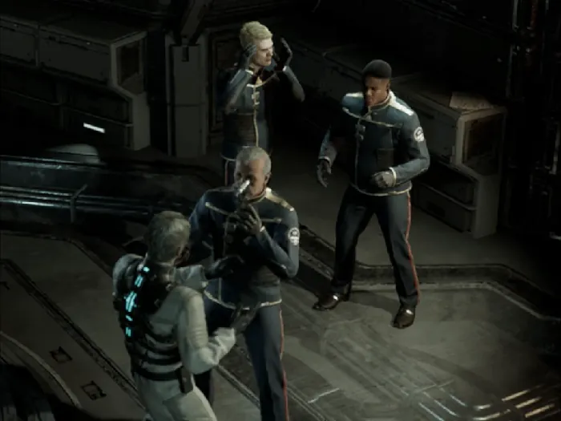
USG 이시무라호의 선교에서도 점차 정신이상으로 편집증이 시달리던 선장이 동료 유니톨로지 신도이자 그의 방식에 반대하던 수석과학사관 테렌스 카인에게 제압되는 과정에서 우발적으로 사망한다.
엎친 데 덮친 격으로 통신이 마비되고 남아 있던 탈출선들마저 아무도 태우지 않은 채 발사되었다 그 결과 함선에 남겨진 사람들은 탈출할 방법조차 없이, 점점 축소되는 안전 구역 밖 복도를 배회하는 괴물들의 비명과 습격 속에 감옥처럼 갇히고 말았다.
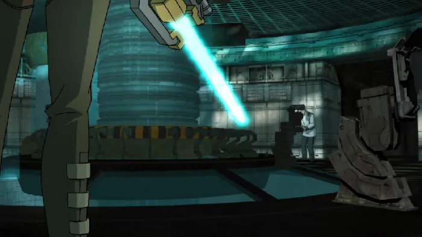
모든 희망이 사라진 듯한 상황에서, 카인 박사는 함선의 엔진을 정지시키기로 결심했다. 이는 함선이 서서히 행성 표면으로 추락하도록 만드는 조치였다.
대기권 재진입 과정에서 함선 전체가 마커와 함께 파괴되고 불타 사라지기를 바랐던 것이다. 그의 계획은 마커가 이 항성계를 벗어나 인류 전체와 접촉하는 사태를 막는 것이었다. 함선의 수석보안사관 알리사 빈센트는 어딘가에 생존자가 더 있을 것이라며 이를 저지한다.
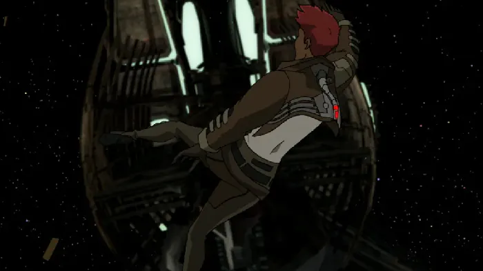
하지만 빈센트 또한 마커에 네크로모프가 접근하지 못하는 것을 보고서야 마커와 배가 반드시 파괴되어야 한다는 유언을 남기고 구조 신호를 보낸 뒤 우주 공간으로 빨려들어가 사망하고 만다.
하지만 도움을 요청하기 위한 용감한 행동처럼 보였던 이 구조 신호는 사실 죽은 동료의 환영을 보고 더 많은 희생자를 함정으로 유인하려는 마커의 유인일 뿐이었을지도 모른다.
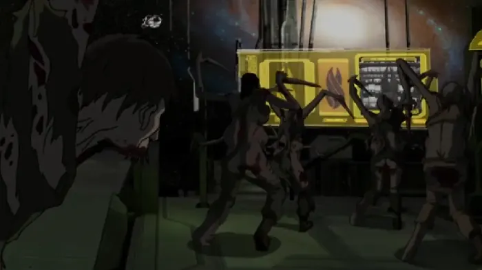
그나마 선교, 의료 구역, 기관 구역, 채굴 구역은 바리케이드를 친 뒤 네크로모프를 저지하고 생존자들을 대피시키며 어느 정도 버티고 있었으나 머지않아 이들 구역마저도 바리케이드를 부수고 환기구를 통해 닥치는 대로 몰려들어오는 네크로모프들에게 잠식되어 버렸다.
결국 이시무라는 네크로모프들이 배회하는 죽음의 배가 되어버렸다.
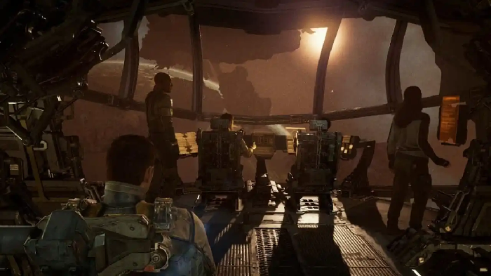
그리고 사건 발생부터 1주일 후, 구조 신호를 받고 켈리온 호가 이곳에 도착하면서 데드 스페이스 본편이 시작된다.
https://youtu.be/HvVBSxl9g20?si=uRIKcWgzWzBLobp3